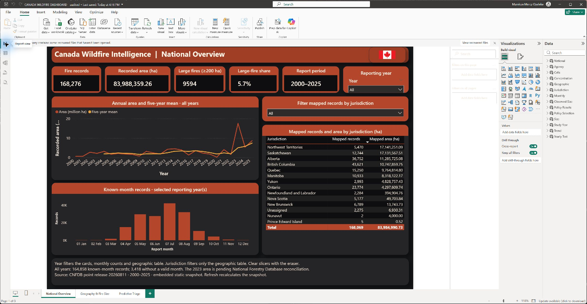
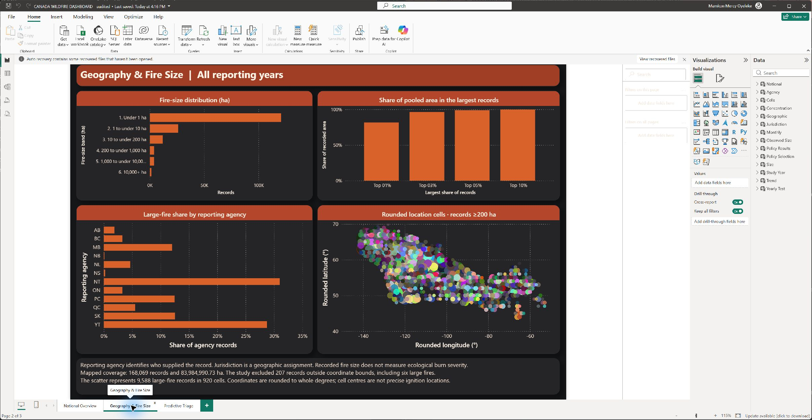
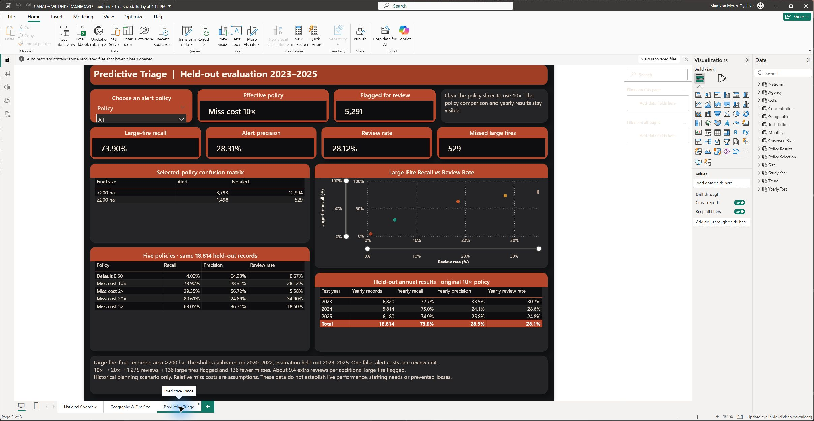
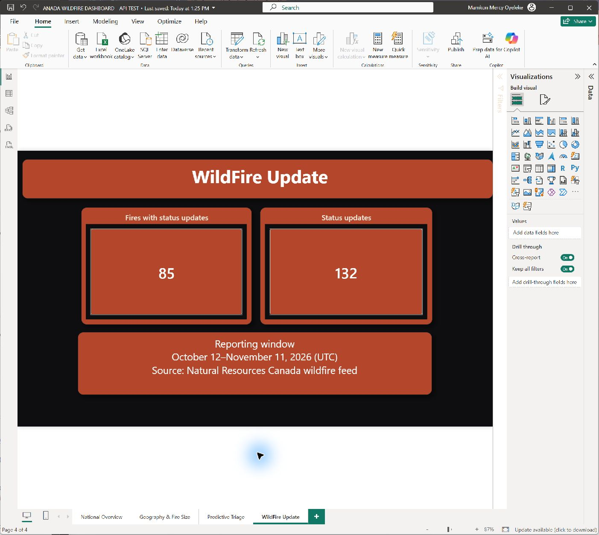
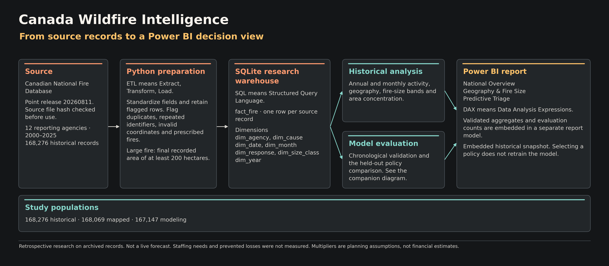
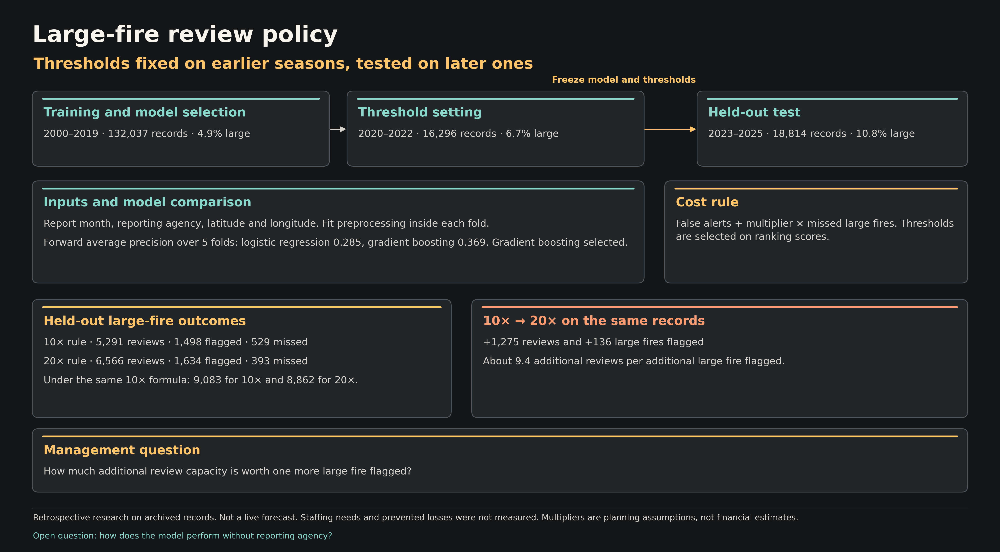

Environmental analytics · Retrospective research
How many extra reviews is one more large fire worth?
On the same 18,814 held-out Canadian wildfire records from 2023–2025, the 20× alert policy would have flagged 136 more large fires than the 10× policy and required 1,275 additional reviews. That’s about 9.4 extra reviews per additional large fire flagged.
Patterns in the data
Across 2000–2025, July recorded 3.07 times the average calendar-month count. The largest 3% of records accounted for 96.2% of pooled recorded area, while the within-agency share ranged from 59% to over 99%. July’s volume is useful for reviewing seasonal staffing. The agency range points to different large-fire workloads.
Canada Wildfire Intelligence
The 2000–2025 study covers 168,276 records from 12 reporting agencies, 83,988,359.26 recorded hectares, and 9,594 fires of at least 200 hectares. The 2023 area total is pending National Forestry Database reconciliation.
Explore the interactive dashboard ↗
Geography & Fire Size · Predictive Triage
Audited Power BI Desktop report
Select a report preview to enlarge it.




Impact and decision trade-offs
The original 10× policy flagged 1,498 of 2,027 large fires and missed 529. It sent 5,291 records (28.12%) for review. Of those alerts, 3,793 concerned fires that ended below 200 hectares.
| Alert rule | Large fires flagged | Large fires missed | Records flagged for review |
|---|---|---|---|
| Miss cost 10× | 1,498 | 529 | 5,291 |
| Miss cost 20× | 1,634 | 393 | 6,566 |
On the same held-out records, 20× would have added 1,275 reviews, flagged 136 more large fires and missed 136 fewer. That is about 9.4 additional reviews per additional large fire flagged. This comparison describes historical performance.
Why these metrics matter
On the held-out records, clearing every record would have achieved 89.23% accuracy while missing all 2,027 large fires. Because large fires were uncommon, I used average precision to compare how well the models ranked them during validation. For the final policy comparison, I reported measures that show both detection and workload.
- Recall shows what share of actual large fires were flagged for review.
- Precision shows what share of alerts were for large fires.
- Review rate shows what share of evaluated records would go to manual review.
Capacity example. With an illustrative budget of 6,000 reviews across the held-out period, the 10× policy fits at 5,291. The 20× policy would flag 136 more large fires and exceed the budget at 6,566. The example uses a hypothetical budget. The study did not validate an operating capacity.
Who can use the research?
- Wildfire operations planners can use historical seasonality as a starting point for staffing reviews and check agency-specific patterns before setting dates.
- Regional emergency management and mutual-aid coordinators can compare how much area came from large events and use the results to frame capacity discussions.
- Analysts reviewing a triage rule can compare missed large fires with the extra workload at each cutoff before proposing a prospective test.
Agencies record small fires differently. Geography & Fire Size shows agency shares separately from geographic jurisdiction. Recorded area also reflects the reporting scope and provides no direct measure of community exposure.
How I built it
- Extract, transform, and load (ETL). I verified the source release, used Python to standardize the records and flag exclusions, then loaded the results into SQLite. I checked the warehouse summaries before using the aggregates in Power BI. See the ETL steps and warehouse diagram.
- Python and scikit-learn compared two models using earlier fire seasons. I chose the alert cutoff on 2020–2022 data before scoring the held-out seasons.
- Matplotlib turned the verified results into a workflow diagram. The study also produced aggregate files for a separate Power BI model review.
I treated one missed large fire as ten extra reviews when selecting the cutoff. That cost ratio is a planning assumption. The study supports historical review planning. Live use would require confirming which inputs were available at the first report and testing on new seasons.
Workflow and policy evaluation


Read the technical methods and validation ↗
Explore the results
Read the Ontario air quality study ↗
View the research repository · Read the modeling methods and reproduction steps
Download the policy comparison · Download the year-by-year results